Bài cá nhân · 4 giờ trên lớp (+ ~45′ chuẩn bị) · YOLO26 · YOLOE · SAM · CVAT Review & 12 ảnh bẫy · Calibration v1.1 & QC
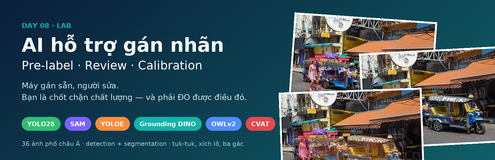
Trước buổi học (~45 phút, không tính vào đồng hồ 240 phút trên lớp), bạn fork repository về tài khoản cá nhân
ở chế độ public theo quy ước K5-L23-DAY08-[MSHV]-[HoTen]-AIPrelabel, clone về
máy, thiết lập môi trường Python 3.10–3.13 (khuyến nghị 3.12) và hoàn tất kiểm tra
Python + CVAT. Bạn có thể mở docs/setup_wizard.html và dùng công cụ độc lập docs/day08_setup.py (download --profile 8gb|16gb,
check [--light]) để chuẩn bị trước lớp song song với scripts/download_models.py và
scripts/check_env.py.
requirements.txt): cài requirements.txt,
tải --set core (yolo26m.pt, yoloe-26s-seg.pt,
sam2.1_b.pt), rồi chạy python scripts/check_env.py --cvat http://localhost:8080 để
nhận SẴN SÀNG..python scripts/download_models.py --set small (yolo26n.pt,
yoloe-26s-seg.pt, sam2.1_t.pt) + --set sam1
(mobile_sam.pt), rồi thay --size n --sam sam2.1_t.pt (hoặc
mobile_sam.pt) khi chạy để đạt ~0.4–4 giây/ảnh trên CPU mà vẫn chừa đủ RAM cho Docker CVAT.
requirements-local.txt): cài
requirements-local.txt trên máy cho các script đo/kiểm định và đẩy inference Pha 2–3 lên Google
Colab theo docs/COLAB.md
(notebooks/day08_colab.ipynb). Khi đó check_env.py báo thiếu
torch/ultralytics là bình thường — chỉ cần thư viện nhẹ + CVAT đạt
PASS, hoặc chạy python docs/day08_setup.py check --light ra
SẴN SÀNG cho buổi học..https://github.com/GlennQuagmiree/K5-L23-Day08-AI-Assisted-Labeling# Windows (PowerShell)
git clone https://github.com/<github-cua-ban>/K5-L23-DAY08-<MSHV>-<HoTen>-AIPrelabel.git
cd K5-L23-DAY08-<MSHV>-<HoTen>-AIPrelabel
python -m venv .venv
.venv\Scripts\Activate.ps1
python -m pip install -U pip
python -m pip install -r requirements.txt
python scripts/download_models.py --set core # máy 8 GB / CPU: --set small rồi --set sam1
python scripts/check_env.py --cvat http://localhost:8080
python scripts/make_cvat_labels.py
python scripts/prepare_workdirs.py
# macOS / Ubuntu (Bash)
git clone https://github.com/<github-cua-ban>/K5-L23-DAY08-<MSHV>-<HoTen>-AIPrelabel.git
cd K5-L23-DAY08-<MSHV>-<HoTen>-AIPrelabel
python3 -m venv .venv
source .venv/bin/activate
python -m pip install -U pip
python -m pip install -r requirements.txt
python scripts/download_models.py --set core # máy 8 GB / CPU: --set small rồi --set sam1
python scripts/check_env.py --cvat http://localhost:8080
python scripts/make_cvat_labels.py
python scripts/prepare_workdirs.py
Sau khi prepare_workdirs.py chia xong work/tasks/gold/ (4 ảnh) và
work/tasks/review/ (24 ảnh), bạn mở CVAT chạy bằng Docker tại
http://localhost:8080 (không dùng bản web cvat.ai) theo
docs/CVAT_AI.md để tạo Project
day08-<MSHV>. Trong tab Raw, dán toàn bộ
cvat/labels_generated.json, bấm Save (hoặc Done), rà đủ 8 nhãn
ở tab Constructor rồi bấm Submit & Open.
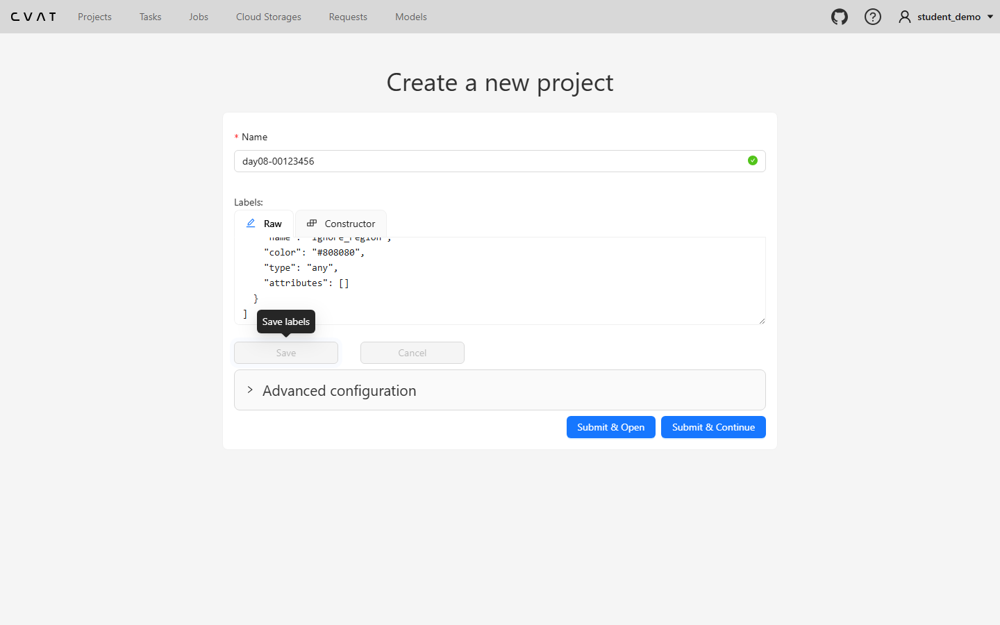
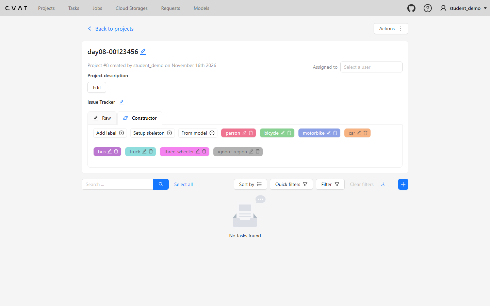
requirements.txt): python scripts/check_env.py --cvat http://localhost:8080
báo SẴN SÀNG..requirements-local.txt): thư viện nhẹ + CVAT đạt và
python docs/day08_setup.py check --light báo SẴN SÀNG cho buổi học.
(check_env.py thiếu torch/ultralytics là bình thường).
python scripts/prepare_workdirs.py
tạo xong work/tasks/gold/ (4 ảnh) và work/tasks/review/ (24 ảnh).models/ (--set core hoặc
--set small + --set sam1); dùng Colab thì bỏ qua.http://localhost:8080) hiển thị đủ 8 nhãn kèm conf và
can_review, không còn lỗi JSON trống thuộc tính.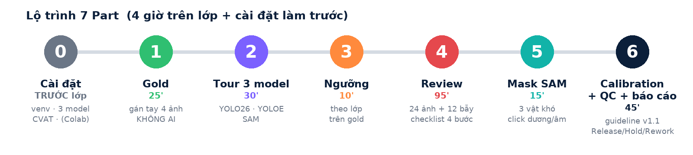
Nếu bạn chạy model YOLO26 hay YOLOE lên cả 36 ảnh trước khi gán tập gold, bộ não sẽ bị neo vào những khung
bao có sẵn do thuật toán vẽ ra. Hậu quả là bộ nhãn gold — vốn đóng vai trò thước đo chân lý để chọn ngưỡng ở
Pha 3 và tính Precision/Recall khách quan ở Pha 4 — bị nhiễm chính những thiên kiến bỏ sót hoặc sai lớp của
máy. Bốn ảnh gold (work/tasks/gold/) phải phản ánh trung thực cách hiểu của người
gán dựa thuần túy trên guideline/guideline_v1.0_label_contract.md.
Bộ nhãn giữ nguyên 7 lớp mục tiêu (person, bicycle, motorbike,
car, bus, truck, three_wheeler) và 1 vùng đặc biệt
ignore_region. Mọi khung đối tượng chuẩn có chiều cao tối thiểu 20 px
(min_box_height_px = 20); cụm người/xe quá nhỏ ở nền xa hoặc đám đông dính sát nhau không thể
tách từng cá thể được gom bằng một box ignore_region. Khi gặp tình huống lưỡng lự giữa hai lớp
hoặc vật bị che khuất nửa thân, bạn tự quyết định theo v1.0 rồi tick thuộc tính can_review thành
true ngay trên box đó.
work/prelabel/Trong submission/time_log.csv, dòng gold_manual đo trực tiếp tốc độ gán tay nguyên
thủy (số phút thực tế chia 4 ảnh). Ở cuối Pha 4, bạn so sánh con số này với tốc độ duyệt lô có pre-label
(batch_review, phút trên 24 ảnh), đồng thời lưu ý ảnh hưởng của việc đã quen cảnh phố châu Á sau
khi làm gold.
Không chạy prelabel.py, không bật AI Interactor trong CVAT và không tham khảo nhãn mẫu trên
data/cache/ trước khi hoàn tất export submission/labels/gold_manual.json. Tập
gold chỉ có giá trị kiểm định khi được tạo hoàn toàn bằng mắt và tay của bạn.
ignore_region, bao người lái person riêng với xe và cách phân biệt
three_wheeler.gold-manual và tải lên đúng 4
ảnh trong work/tasks/gold/.gold-manual, dùng phím N (Rectangle) gán đầy đủ đối tượng cho cả 4
ảnh, để trống conf, gắn cờ can_review cho các ca biên, bấm Ctrl+S lưu
sau mỗi ảnh và ghi tổng số phút vào gold_manual trong submission/time_log.csv.
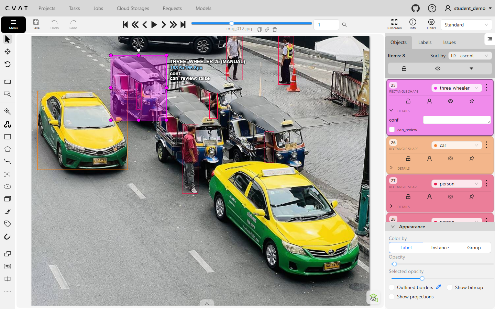
.zip khi tiến trình đạt 100%.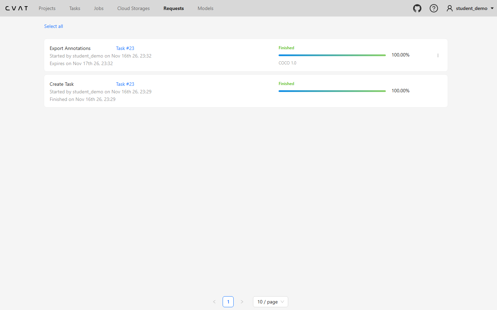
annotations/instances_default.json lưu đè thành
submission/labels/gold_manual.json, rồi kiểm tra cấu trúc COCO, đủ 4 ảnh gold và chiều cao box
tối thiểu:# Windows (PowerShell)
python scripts/validate_labels.py submission/labels/gold_manual.json --expect gold
# macOS / Ubuntu (Bash)
python scripts/validate_labels.py submission/labels/gold_manual.json --expect gold
Lệnh validate_labels.py --expect gold phải kết thúc với dòng
[submission\labels\gold_manual.json] 4 ảnh, <số đối tượng>: OK (kiểm chứng thực tế đạt
62 đối tượng, không lỗi schema hay lớp lạ; mọi cảnh báo chiều cao < 20 px được rà
lại để chuyển sang ignore_region nếu quá nhỏ). Khi gold_manual.json đã khóa, bạn
chính thức mở khóa bước dùng mô hình AI ở Pha 2.
Khi áp dụng YOLO26 (yolo26m.pt, detector danh mục cố định 80 lớp COCO) lên ảnh
phố Bangkok hay Hà Nội, mô hình bắt rất chắc person, motorbike và car,
nhưng không có khái niệm three_wheeler nên gọi nhầm tuk-tuk thành car hoặc
truck. Ngược lại, YOLOE-26s (yoloe-26s-seg.pt, open-vocabulary theo
prompt chữ --classes three_wheeler) tìm được tuk-tuk nhưng box sinh ra thường lỏng hơn, dễ trùng
hai box chồng nhau hoặc gộp nhầm xe đẩy hàng rong. Cuối cùng, SAM (sam2.1_b.pt,
sam2.1_t.pt, mobile_sam.pt hoặc SAM 3) biến bounding box hoặc điểm click thành
polygon/mask bám sát biên vật thể, đánh đổi thời gian xử lý lâu hơn đáng kể trên CPU.
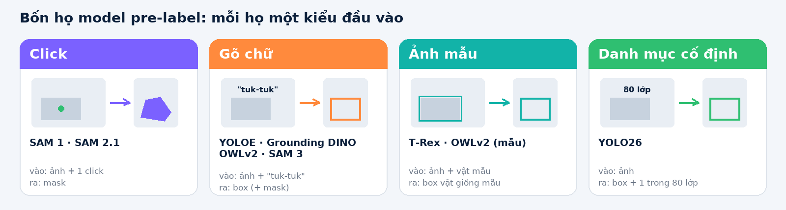
Trong scripts/prelabel.py, nâng --conf từ 0.25 lên 0.5
giúp giảm box rác ở nền xa nhưng có thể làm mất hơn 35% người đi bộ hoặc xe máy nhỏ. Mọi lượt chạy qua
prelabel.py đều tự động lưu JSON kết quả (pre.coco.json), ảnh trong
viz/ và log vào work/runs.csv. Trên Windows PowerShell, bắt buộc bọc ngoặc kép quanh
tham số chứa dấu phẩy (--classes "person,motorbike,car") để PowerShell không tách chuỗi thành
mảng đối số.
Bạn giữ riêng từng thư mục (t_y26, t_y26_c05, t_yoloe,
t_sam) trên tập 8 ảnh pilot (hoặc 2 ảnh img_004.jpg,
img_013.jpg cho SAM trên CPU), rồi chép số liệu vào submission/model_log.csv kèm
nhận xét ở what_went_wrong và decision. Với máy 8 GB RAM / chỉ CPU đã tải
--set small + --set sam1, đổi --size m → --size n (tùy
chọn --imgsz 640) và --sam sam2.1_b.pt → sam2.1_t.pt hoặc
mobile_sam.pt (~0.4–4s/ảnh), hoặc chạy Google Colab (notebooks/day08_colab.ipynb) và tải kết quả về giải nén vào
work/prelabel/.
pilot (8 ảnh) và hai ảnh thử SAM (lưu ý dấu ngoặc kép
trên PowerShell):# Windows (PowerShell)
python scripts/prelabel.py --model yolo26 --size m --split pilot --conf 0.25 --out work/prelabel/t_y26
python scripts/prelabel.py --model yolo26 --size m --split pilot --conf 0.5 --out work/prelabel/t_y26_c05
python scripts/prelabel.py --model yoloe --classes three_wheeler --split pilot --conf 0.25 --out work/prelabel/t_yoloe
python scripts/prelabel.py --model yolo26 --size m --classes "person,motorbike,car" --images img_004.jpg img_013.jpg --conf 0.3 --segmenter sam --sam sam2.1_b.pt --out work/prelabel/t_sam
# macOS / Ubuntu (Bash)
python scripts/prelabel.py --model yolo26 --size m --split pilot --conf 0.25 --out work/prelabel/t_y26
python scripts/prelabel.py --model yolo26 --size m --split pilot --conf 0.5 --out work/prelabel/t_y26_c05
python scripts/prelabel.py --model yoloe --classes three_wheeler --split pilot --conf 0.25 --out work/prelabel/t_yoloe
python scripts/prelabel.py --model yolo26 --size m --classes "person,motorbike,car" --images img_004.jpg img_013.jpg --conf 0.3 --segmenter sam --sam sam2.1_b.pt --out work/prelabel/t_sam
work/prelabel/t_y26/viz/, t_y26_c05/viz/,
t_yoloe/viz/ và t_sam/viz/ để so sánh lỗi bỏ sót, sai lớp và độ khít viền polygon.
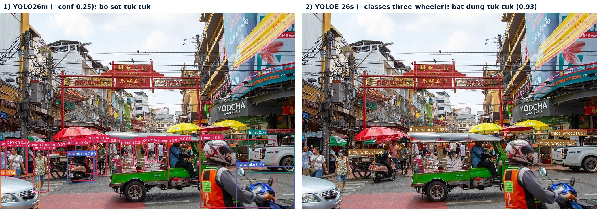
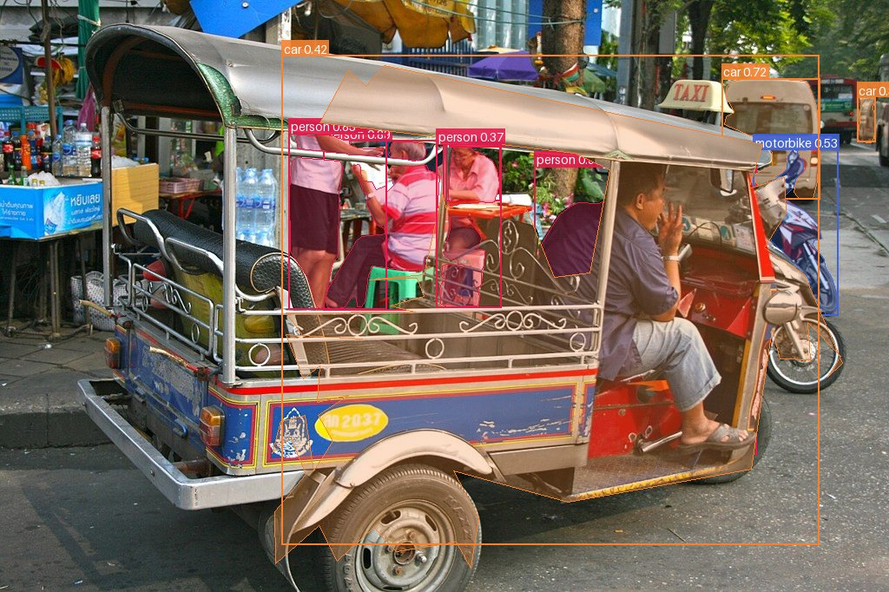
work/runs.csv, chuyển các dòng chạy thực tế vào submission/model_log.csv và
điền nhận xét vào what_went_right, what_went_wrong, decision.Pha 2 hoàn thành khi submission/model_log.csv có ít nhất 4 dòng thuộc tối thiểu 3 biến thể/model
(kèm 1 lượt có sam), không để trống what_went_wrong, và bạn chỉ ra ít nhất một lỗi
không thể sửa chỉ bằng việc tăng/giảm --conf.
Đặt cùng một ngưỡng tin cậy cho mọi lớp gây mất cân bằng giữa độ phủ và nhiễu: lớp có nhiều biến dạng như
person cần ngưỡng mềm hơn để giữ recall, trong khi motorbike đông đúc dễ phát sinh
nhiều box giả nếu ngưỡng quá thấp. Bằng cách chạy inference toàn tập một lần ở --conf 0.05
(--no-viz), bạn lưu toàn bộ ứng viên rồi dùng threshold_sweep.py quét 19 mức ngưỡng
trên gold chỉ trong vài giây.
Script threshold_sweep.py chọn ngưỡng tin cậy cao nhất giữ được recall trên 4
ảnh gold tối thiểu 90% (recall_target = 0.9). Lớp nào có dưới 5 vật trong gold (ví
dụ kiểm chứng chỉ có 4 bicycle, 1 bus, 1 truck, 4
three_wheeler) sẽ được giữ ở ngưỡng mặc định (0.3). Đặc biệt, số đo
trong threshold_sweep.md luôn là kết quả in-sample trên chính 4 ảnh gold nên
mang tính lạc quan.
--pred
Bạn xuất work/prelabel/y26_all/pre.coco.json (1.669 box trong thử nghiệm thực tế)
và work/prelabel/yoloe_all/pre.coco.json (125 box), rồi truyền đồng thời cả hai qua
threshold_sweep.py --pred ... để tổng hợp bảng ngưỡng theo lớp và lấy chuỗi
--thr "..." cho Pha 4. Máy 8 GB RAM / CPU thay --size m → --size n khớp
trọng số --set small (hoặc dùng data/cache/ nếu máy/mạng quá yếu và ghi rõ vào
REPORT.md).
0.05 rồi quét ngưỡng qua --pred đối chiếu với
submission/labels/gold_manual.json:# Windows (PowerShell)
python scripts/prelabel.py --model yolo26 --size m --split all --conf 0.05 --out work/prelabel/y26_all --no-viz
python scripts/prelabel.py --model yoloe --classes three_wheeler --split all --conf 0.05 --out work/prelabel/yoloe_all --no-viz
python scripts/threshold_sweep.py --pred work/prelabel/y26_all/pre.coco.json work/prelabel/yoloe_all/pre.coco.json --gold submission/labels/gold_manual.json
# macOS / Ubuntu (Bash)
python scripts/prelabel.py --model yolo26 --size m --split all --conf 0.05 --out work/prelabel/y26_all --no-viz
python scripts/prelabel.py --model yoloe --classes three_wheeler --split all --conf 0.05 --out work/prelabel/yoloe_all --no-viz
python scripts/threshold_sweep.py --pred work/prelabel/y26_all/pre.coco.json work/prelabel/yoloe_all/pre.coco.json --gold submission/labels/gold_manual.json
submission/qc/threshold_sweep.md, .csv và threshold_sweep.png để
đọc đường cong từng lớp và chép chuỗi --thr "...".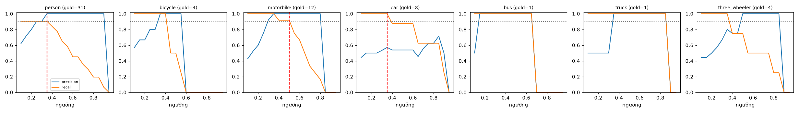
Đọc kỹ cảnh báo mẫu nhỏ trong threshold_sweep.md để đưa vào mục 1 của
REPORT.md. Không ép ngưỡng cao cho các lớp chỉ có 1–4 mẫu trong gold như
bicycle, bus, truck hay three_wheeler.
Bạn chốt Pha 3 khi submission/qc/ có đủ bộ ba file threshold_sweep.* kèm chuỗi
ngưỡng gợi ý (ví dụ --thr "person=0.35,motorbike=0.5,car=0.35"). Sau 10 phút nghỉ giải lao, ta
chuyển sang Pha 4.
Giờ nghỉ giữa chặng giúp mắt thư giãn sau gần một giờ thao tác trên CVAT và đọc đồ thị, đồng thời rà nhanh
xem bạn đã giữ đúng chuỗi --thr "..." từ threshold_sweep.md và đúng MSHV (bao gồm cả
số 0 đầu nếu có) để tiêm bẫy ở Pha 4 hay chưa.
Hiện tượng nguy hiểm nhất khi duyệt nhãn máy là automation bias (thiên kiến tự động hóa):
hộp pre-label trông càng gọn gàng, người duyệt càng ít kiểm tra lại ảnh thật. Để đo trực diện mức độ tỉnh táo,
inject_traps.py dùng MSHV làm hạt giống ngẫu nhiên cấy 12 lỗi nhân tạo (3
wrong_class, 3 loose, 3 extra, 3 missing) vào lô 24 ảnh
batch, rồi review_stats.py kiểm tra tỉ lệ bắt bẫy (trap_catch_min = 80%, tối thiểu
10/12).
pre_traps.coco.json vs
pre_traps_import.coco.json và bẫy số 0 đầu trên WindowsLệnh inject_traps.py tạo hai file: pre_traps.coco.json (đủ 28 ảnh
batch + gold cùng điểm tin cậy để chạy thống kê) và pre_traps_import.coco.json (chỉ
24 ảnh batch sạch để nạp lên Task batch-review trên CVAT). Khi tải lên CVAT
chỉ chọn pre_traps_import.coco.json. Trên Windows PowerShell, luôn bọc
--student "00123456" và --thr "..." trong ngoặc kép để giữ nguyên số 0
đầu và dấu phẩy.
Trên từng bức ảnh, hãy thực hiện đủ 4 bước: (1) quét toàn ảnh theo chiều trái-phải đếm số vật trước
khi tin vào box màu; (2) thêm box sót (N) hoặc xóa box ma (Del); (3) soi
nhãn và kiểm 4 cạnh viền từng box để sửa sai lớp, kéo sát box bị hở nền (loose) và xóa box
three_wheeler trùng lặp của YOLOE; (4) dùng nút Filters trên thanh công cụ để rà
riêng từng lớp hoặc gắn cờ can_review cho ca khó.
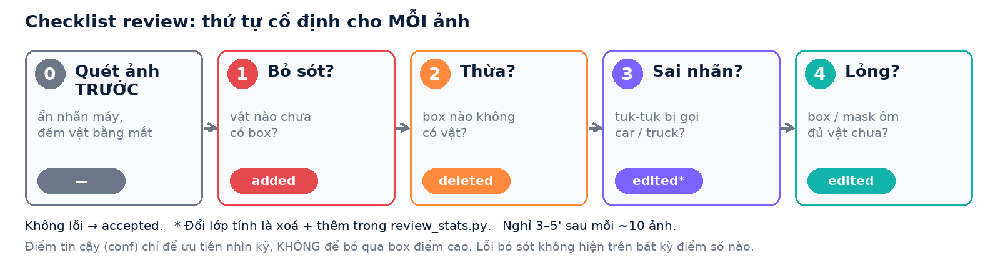
yoloe_all đứng trước để ưu tiên three_wheeler thắng
car/truck của y26_all tại IoU >= 0.6), xuất ra
work/prelabel/merged_review/pre.coco.json rồi cài 12 bẫy bằng đúng MSHV của bạn (thay
00123456 bằng MSHV của bạn, giữ nguyên ngoặc kép):# Windows (PowerShell)
python scripts/merge_prelabels.py work/prelabel/yoloe_all/pre.coco.json work/prelabel/y26_all/pre.coco.json --thr "person=0.35,motorbike=0.5,car=0.35" --conf 0.3 --iou 0.6 --split "batch,gold" --out work/prelabel/merged_review/pre.coco.json
python scripts/inject_traps.py --pre work/prelabel/merged_review/pre.coco.json --student "00123456"
# macOS / Ubuntu (Bash)
python scripts/merge_prelabels.py work/prelabel/yoloe_all/pre.coco.json work/prelabel/y26_all/pre.coco.json --thr "person=0.35,motorbike=0.5,car=0.35" --conf 0.3 --iou 0.6 --split "batch,gold" --out work/prelabel/merged_review/pre.coco.json
python scripts/inject_traps.py --pre work/prelabel/merged_review/pre.coco.json --student "00123456"
batch-review và tải lên toàn bộ
24 ảnh trong work/tasks/review/.batch-review, chọn Import
format: COCO 1.0, chọn tệp submission/prelabel/pre_traps_import.coco.json, giữ
Import mode: Replace (hoặc chuyển Append nếu muốn giữ nhãn cũ) rồi bấm
OK.Khi Import mode đang để Replace, sau khi bấm OK trên hộp thoại
Upload annotations, CVAT hiện thêm hộp thoại xác nhận Replace existing annotations?. Phải
bấm tiếp nút Replace annotations thì nhãn mới được nạp thật vào Task (nếu đóng nhầm hộp
thoại thứ hai, Job vẫn có 0 shape).
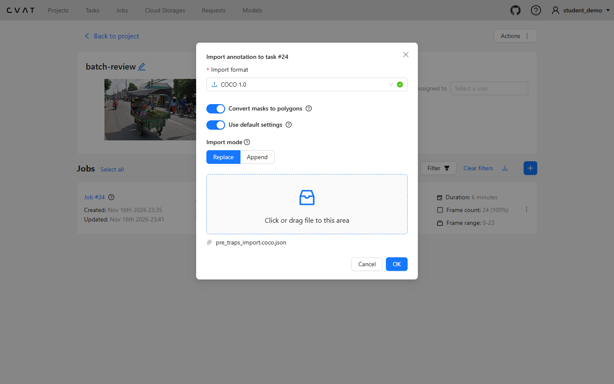
batch-review, duyệt đủ 24 ảnh theo checklist 4 bước, dùng nút
Filters để rà theo lớp và tick can_review trong bảng Objects
cho ca biên. Nhớ Ctrl+S thường xuyên và ghi thời gian duyệt vào batch_review của
submission/time_log.csv.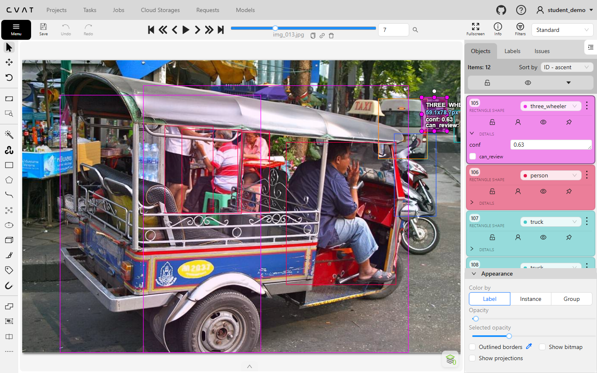
annotations/instances_default.json lưu thành
submission/labels/batch_reviewed.json, rồi chạy kiểm định nhãn và tính thống kê review với đầy
đủ --pre, --final, --gold, --key:# Windows (PowerShell)
python scripts/validate_labels.py --all
python scripts/review_stats.py --pre submission/prelabel/pre_traps.coco.json --final submission/labels/batch_reviewed.json --gold submission/labels/gold_manual.json --key submission/prelabel/traps_key.json
# macOS / Ubuntu (Bash)
python scripts/validate_labels.py --all
python scripts/review_stats.py --pre submission/prelabel/pre_traps.coco.json --final submission/labels/batch_reviewed.json --gold submission/labels/gold_manual.json --key submission/prelabel/traps_key.json
validate_labels.py --all báo OK cho cả 4 ảnh gold và 24 ảnh batch;
submission/qc/review_stats.md hiển thị bảng 4 trạng thái, Precision/Recall so với gold và tỉ lệ
bắt bẫy >= 80% (kiểm chứng thực tế đạt 11/12 = 91.7%). Tiếp theo, sang Pha 5
để tách mask SAM cho 3 vật khó.
Với xe tuk-tuk có mái che khung sắt hở nền hoặc người ngồi sát nhau trên băng ghế, bounding box chữ nhật chứa
nhiều phần nền và đối tượng phía sau. Phân đoạn theo điểm với SAM dùng cặp điểm dương
(--pos) mở rộng mặt nạ lên xe mục tiêu và điểm âm (--neg) cắt gọn phần người lái
hoặc vỉa hè ngay tại biên tiếp xúc.
Trong scripts/sam2_points.py, bạn có thể dùng sam2.1_b.pt (SAM 2.1 base),
mobile_sam.pt (SAM 1 gọn nhẹ trên CPU) hoặc biến thể SAM 3 (cần quyền tải), tùy chọn thêm khung
--box "x1,y1,x2,y2". Theo mục 4.2 của
guideline_v1.0_label_contract.md, mask của phương tiện như three_wheeler chỉ ôm
khung xe, mái che và bánh xe; người lái (person) và hàng hóa nhô ngoài phải được tách bằng điểm
--neg.
Chạy thử cả sam2.1_b.pt và mobile_sam.pt trên cùng tọa độ click của một chiếc
tuk-tuk (như img_013.jpg) để ghi nhận xét định tính rõ ràng vào mục 5 của REPORT.md
xem bản nào giữ viền kim loại, bánh xe tốt hơn và bản nào dễ lem nền.
img_013.jpg, img_004.jpg,
img_017.jpg), mở ảnh xem tọa độ pixel rồi chạy sam2_points.py: truyền
--image <tên_ảnh> (script tự đọc trong data/images/), lặp lại cờ
--pos "x,y" / --neg "x,y" (bọc ngoặc kép trên PowerShell), và đặt
--out submission/masks --name <tên_file>.# Windows (PowerShell)
python scripts/sam2_points.py --image img_013.jpg --pos "400,480" --pos "600,110" --neg "720,300" --sam sam2.1_b.pt --out submission/masks --name tuktuk_img013_sam2
python scripts/sam2_points.py --image img_013.jpg --pos "400,480" --pos "600,110" --neg "720,300" --sam mobile_sam.pt --out submission/masks --name tuktuk_img013_sam1
python scripts/sam2_points.py --image img_004.jpg --pos "620,480" --pos "700,560" --neg "465,450" --sam sam2.1_b.pt --out submission/masks --name tuktuk_img004_sam2
python scripts/sam2_points.py --image img_017.jpg --pos "560,420" --pos "680,500" --neg "645,355" --sam sam2.1_b.pt --out submission/masks --name tuktuk_img017_sam2
# macOS / Ubuntu (Bash)
python scripts/sam2_points.py --image img_013.jpg --pos "400,480" --pos "600,110" --neg "720,300" --sam sam2.1_b.pt --out submission/masks --name tuktuk_img013_sam2
python scripts/sam2_points.py --image img_013.jpg --pos "400,480" --pos "600,110" --neg "720,300" --sam mobile_sam.pt --out submission/masks --name tuktuk_img013_sam1
python scripts/sam2_points.py --image img_004.jpg --pos "620,480" --pos "700,560" --neg "465,450" --sam sam2.1_b.pt --out submission/masks --name tuktuk_img004_sam2
python scripts/sam2_points.py --image img_017.jpg --pos "560,420" --pos "680,500" --neg "645,355" --sam sam2.1_b.pt --out submission/masks --name tuktuk_img017_sam2
submission/masks/ kiểm tra điểm xanh (--pos), điểm đỏ
(--neg), xem 1 điểm âm đã đủ tách người lái chưa (thử thêm --neg nếu còn dính) và
điền bảng mục 5 của REPORT.md cùng dòng chạy SAM trong model_log.csv.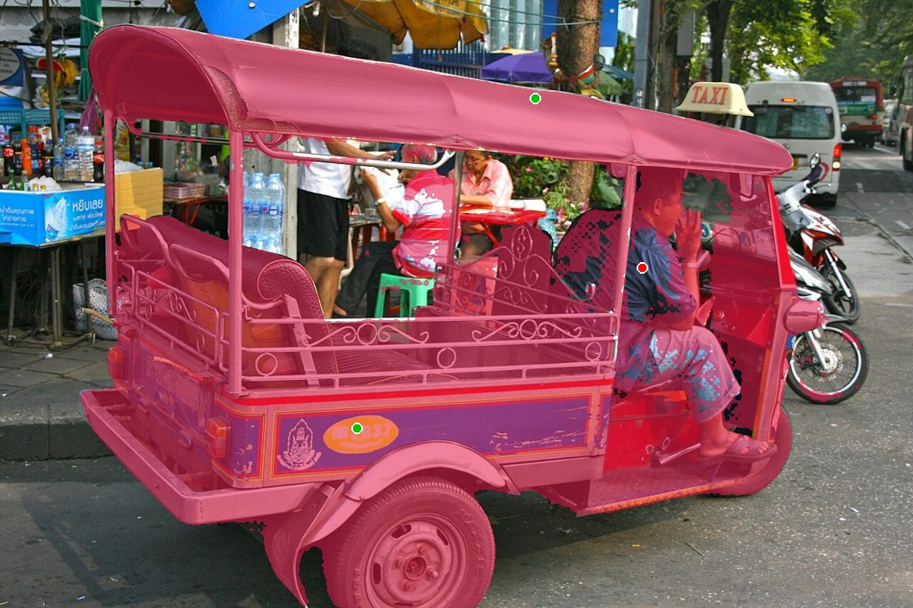
Thư mục submission/masks/ có ít nhất 3 tệp .jpg rõ nét kèm phần so
sánh vào mục 5 của REPORT.md. Tiếp theo, sang Pha 6 để build bản release, kiểm QC và chốt
guideline v1.1.
Ngay cả khi bắt tốt ảnh bẫy, người duyệt vẫn có điểm mù riêng như sót người khuất sau sạp hàng hay bỏ qua hai
hộp three_wheeler chồng đè mà YOLOE sinh ra. Quy trình QC cuối lô rút ra tối đa 3 ảnh
can_review + 5 ảnh ngẫu nhiên (--seed 42) từ 24 ảnh batch để soi theo ID
từng box, đối chiếu ngưỡng error_rate_img_max = 2% và biến mọi vướng mắc thành quy tắc mới trong
guideline_v1.1_calibrated.md.
Đọc submission/qc/qc_report_auto.md theo thứ tự Hold → Rework → Release: chọn
Hold nếu guideline còn câu hỏi chưa chốt (--guideline-gap > 0) hoặc ảnh gốc
hỏng (--data-problem > 0); chọn Rework nếu tỉ lệ ảnh lỗi
> 2%, có lỗi hệ thống, bắt bẫy < 80% hoặc tự kiểm không đạt; chỉ chọn
Release khi sạch cả hai. Ngay cả khi 0/7 ảnh lỗi, cận trên 95% (Wilson) của tỉ lệ lỗi thật
vẫn là 35% (với 4/7 ảnh lỗi ở mẫu E2E thực tế, cận trên lên tới 84%) — phải
nêu rõ giới hạn mẫu nhỏ này trong REPORT.md.
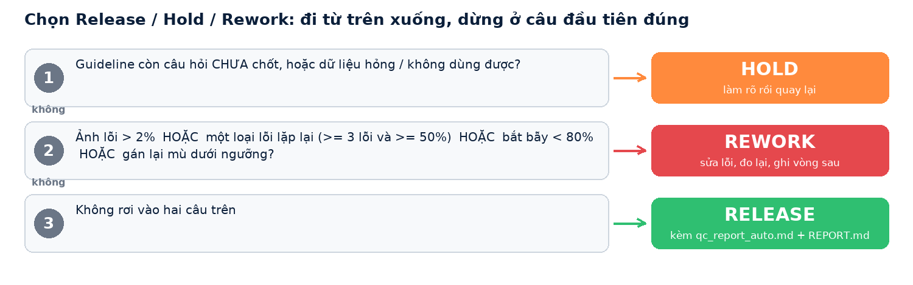
qc_sample.py xuất ảnh gắn ID từng vật vào work/qc/review/img_0xx.jpg. Điền lỗi thật
quan sát được vào submission/qc/qc_review.csv bằng một trong các giá trị chuẩn
(khong, bo_sot, thua, sai_lop,
sai_vi_tri_kich_thuoc, sai_thuoc_tinh, sai_mask). Nếu quyết định là
Rework, viết rõ danh sách cần sửa (hoặc sửa lại trên CVAT xuất thành
submission/labels/qc_fixed.json rồi chạy lại build_release.py).
can_review:# Windows (PowerShell)
python scripts/build_release.py
python scripts/qc_sample.py --n 5 --seed 42
# macOS / Ubuntu (Bash)
python scripts/build_release.py
python scripts/qc_sample.py --n 5 --seed 42
work/qc/review/, điền đủ dòng vào submission/qc/qc_review.csv,
rồi chạy python scripts/qc_report.py để sinh submission/qc/qc_report_auto.md.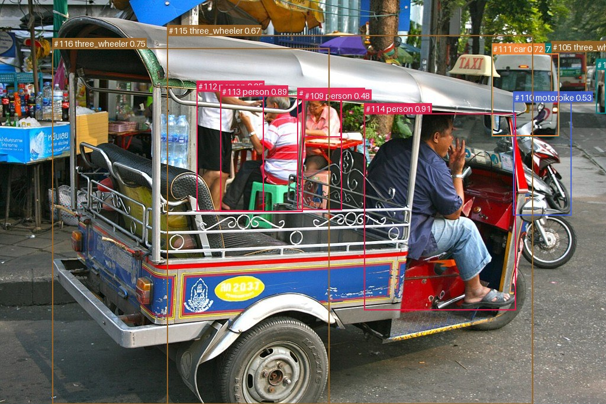
submission/qc/calibration_decisions.csv (gồm
đủ loi_may, cau_hoi_mo và can_review hoặc bay_lot) và
tổng hợp vào submission/guidelines/guideline_v1.1_calibrated.md kèm img_0xx ví dụ.
submission/REPORT.md (mọi con số kèm mẫu số, cận trên Wilson 95%,
quyết định Release / Hold / Rework) và bảng tóm tắt ở STUDENT.md.Bảo đảm không còn ký hiệu << chưa điền trong README.md,
STUDENT.md, submission/REPORT.md và
submission/guidelines/guideline_v1.1_calibrated.md; các file CSV đều mã hóa UTF-8 và khớp số
liệu với submission/qc/.
Pha 6 hoàn tất khi có đủ submission/release/final_det.coco.json +
release_manifest.json, qc_report_auto.md, guideline_v1.1_calibrated.md,
calibration_decisions.csv và REPORT.md trọn vẹn cả 8 mục. Chặng cuối là rà lỗi tự
động và nộp bài.
Trước khi gửi link lên LMS (https://aithucchien.vinuni.edu.vn), bạn đổi dòng tiêu đề đầu tiên
của README.md đúng mẫu # Day 08 Lab — <MSHV> - <Họ và tên>, cập nhật
commit hash vào STUDENT.md và chạy python scripts/check_submission.py để xác nhận
trạng thái 0 lỗi, 0 cảnh báo. Script tự động rà trạng thái Git để ngăn trọng số
.pt/.onnx/.ts trong models/ lọt vào commit, đối chiếu MSHV giữa
README.md và traps_key.json, đồng thời gọi validate_labels.py --all.
# Windows (PowerShell)
python scripts/check_submission.py
git status
# macOS / Ubuntu (Bash)
python scripts/check_submission.py
git status
Nếu cần lưu thêm bản nộp dự phòng trên LMS theo chuẩn thư mục cá nhân K5-DAY08-HoVaTen-MSSV/,
vẫn giữ nguyên cấu trúc repo public K5-L23-DAY08-[MSHV]-[HoTen]-AIPrelabel trên GitHub để giữ
trọn lịch sử commit các pha. Tuyệt đối không ghi mật khẩu CVAT, token hoặc email cá nhân vào file hay ảnh
chụp.
README.md có dạng # Day 08 Lab — <MSHV> - <Họ và tên>, khớp
traps_key.json.python scripts/check_submission.py
trả về 0 lỗi, 0 cảnh báo. Sạch lỗi: có thể nộp..git status
không có file trọng số .pt / .pth / .onnx / .ts hoặc khóa/token bí mật.K5-L23-DAY08-[MSHV]-[HoTen]-AIPrelabel và nộp link trên
LMS.taxonomy.json → rules, không được sửa)Mục tiêu recall khi quét ngưỡng trên gold (threshold_sweep) |
≥ 90% |
Ghép 1–1 & ngưỡng tính accepted box / mask |
IoU ≥ 0.5 / 0.9 / 0.85 |
Tỉ lệ bắt ảnh bẫy trong 12 bẫy (review_stats) |
≥ 80% (≥ 10/12) |
Chiều cao box chuẩn tối thiểu (nhỏ hơn → ignore_region) |
≥ 20 px |
| Tỉ lệ ảnh có lỗi trong mẫu QC để được Release | ≤ 2% |
Số người tự kiểm (nếu dùng self_consistency): IoU TB / cùng lớp |
≥ 0.85 / ≥ 95% |
Số lượng tối thiểu ảnh gold / batch / mask SAM |
4 / 24 / ≥ 3 |
gold_manual.json hoàn toàn không AI trước khi chạy
bất kỳ model pre-label nào.models/ ngoài Git: Trọng số .pt/.onnx/.ts tải vào
models/ được .gitignore chặn sẵn, không ép commit.--student "00123456",
--classes "person,motorbike,car", --thr "person=0.35,car=0.35",
--pos "400,480" để tránh mất số 0 đầu hoặc tách dấu phẩy.pre_traps_import.coco.json cho Upload annotations; khi ở
chế độ Replace nhớ bấm thêm Replace annotations.CAL-xx và Wilson 95% CI đúng mẫu số vẫn
đạt điểm cao hơn Release giả tạo.K5-L23-DAY08-[MSHV]-[HoTen]-AIPrelabel kèm link trên
aithucchien.vinuni.edu.vn.Phím tắt: Space chạy/dừng · ←→ pha trước/sau · T sáng/tối · P trình chiếu · F toàn màn hình
CVAT báo lỗi khi dán JSON vào Raw |
Chạy lại python scripts/make_cvat_labels.py lấy bản mới nhất (mọi thuộc tính có mảng
values không rỗng), dán vào Raw → Save → Submit & Open. |
Import xongpre_traps_import.coco.jsonmà Job vẫn 0 shape |
Khi Import mode đang để Replace, sau khi bấm OK phải bấm tiếp nút xác nhận
Replace annotations ở hộp thoại thứ hai. |
inject_traps báo mismatch MSHV hoặc PowerShell cắt số 0 đầu |
Luôn bọc ngoặc kép --student "00123456" khớp từng ký tự với dòng đầu
README.md; truyền --pre work/prelabel/merged_review/pre.coco.json và không dùng
pre_traps.coco.json để upload lên CVAT. |
merge_prelabels / sam2_points báo sai tham số hoặc không tìm thấy ảnh |
Bọc ngoặc kép quanh chuỗi có dấu phẩy (--thr "person=0.35,car=0.35"); với
sam2_points.py chỉ truyền tên ảnh (--image img_013.jpg), lặp lại từng cờ
--pos "400,480" --pos "600,110" và truyền thư mục qua
--out submission/masks --name .... |
check_submission báo commit models/ |
Kiểm git status, chạy git rm --cached models/*.pt (giữ
models/.gitkeep) và kiểm tra lại với python scripts/check_submission.py. |
K5-L23-Day08-AI-Assisted-Labeling (GUIDE.md, CHECKPOINTS.md, RUBRIC.md, SUBMISSION.md). Mốc giờ là điểm tự kiểm tại lớp, không phải hạn nộp.